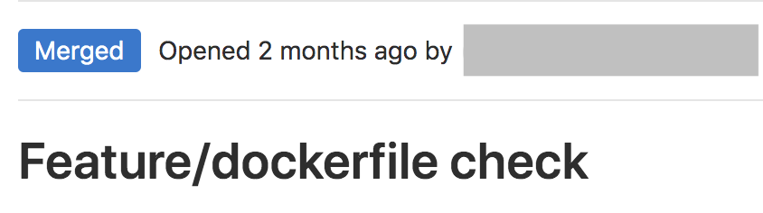
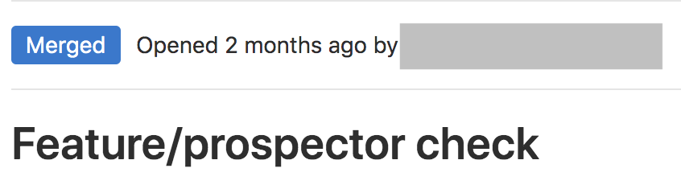
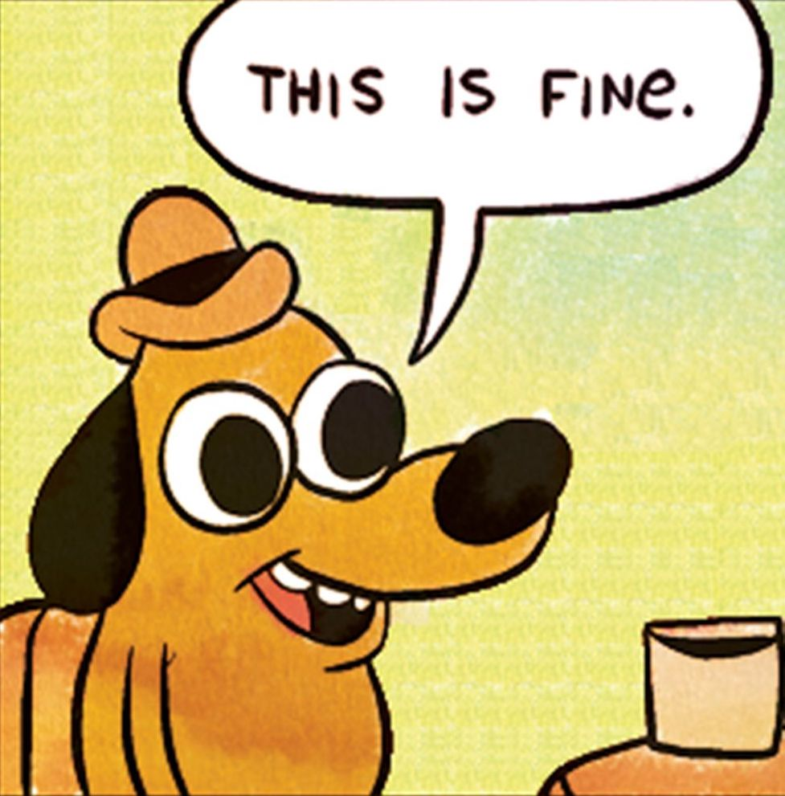

On the Edge of Leadership
On the Edge of Leadership
The Peter Principle
Developer
pre-commit
whitespace
loose debug statements
A S T
valid Dockerfiles
valid Terraform files
. . .
pre-commit run --all-files


Hiring
Termination
Delegation

People
are
the worst
People
are
the best
Communication
Praise
Closing
Learn
Trust
Protect
Open discussions
On the Edge of Leadership